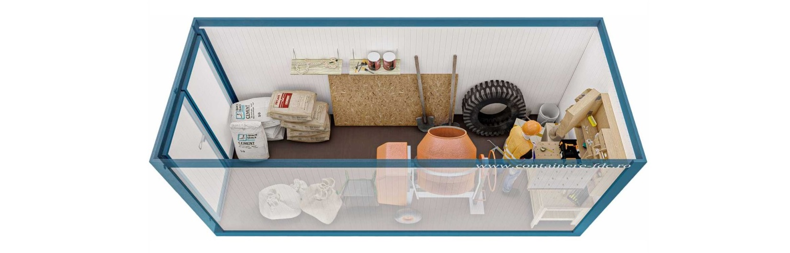

In orice activitate care implica logistica, constructii, comert sau productie, spatiul de stocare este o necesitate. Containerele pentru depozitare reprezinta o solutie practica, eficienta si accesibila pentru pastrarea in siguranta a materialelor, uneltelor, marfurilor sau echipamentelor. Acestea pot fi utilizate atat temporar, cat si pe termen lung, si ofera protectie impotriva intemperiilor, furtului sau degradarii. Prin constructia lor modulara si rezistenta, containerele sunt ideale pentru santiere, depozite mobile sau spatii comerciale.Un avantaj major al gamei noastre de containere depozitare este varietatea de dimensiuni disponibile – astfel, fiecare client poate alege modelul perfect adaptat volumului de marfa si spatiului disponibil. In plus, ai posibilitatea de a opta pentru un container izolat (cu panouri din spuma poliuretanica PIR) sau container neizolat, in functie de tipul de produse depozitate si de conditiile de temperatura necesare.
In orice activitate care implica logistica, constructii, comert sau productie, spatiul de stocare este o necesitate. Containerele pentru depozitare reprezinta o solutie practica, eficienta si accesibila pentru pastrarea in siguranta a materialelor, uneltelor, marfurilor sau echipamentelor. Acestea pot fi utilizate atat temporar, cat si pe termen lung, si ofera protectie impotriva intemperiilor, furtului sau degradarii. Prin constructia lor modulara si rezistenta, containerele sunt ideale pentru santiere, depozite mobile sau spatii comerciale.
Contactați-ne pentru o ofertă detaliată adaptată nevoilor dumneavoastră.
Cere Oferta Acum